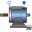
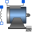

QuasiStationaryDCMachinesModels of quasistationary DC machines |
|
Package Contents
|  |
Quasistationary permanent magnet DC machine |
|
Quasistationary electrical shunt/separate excited linear DC machine |
|
|  |
Quasistationary series excited linear DC machine |
Information
This information is part of the Modelica Standard Library maintained by the Modelica Association.
This package contains quasistationary models of DC machines; these models are fully compatible with the transient machine models of DC machines; the only difference is that electrical transients are neglected.
Please note:
Quasistationary DC machine models are basically different from quasistationary induction machine models:
Quasistationary DC machine models neglect electrical transients, i.e., setting der(i) = 0,
whereas quasistationary induction machine models are based on time phasor theory,
see QuasiStationary Library,
where e.g., L*der(i) is replaced by j*omega*L*(I_re+j*I_im).